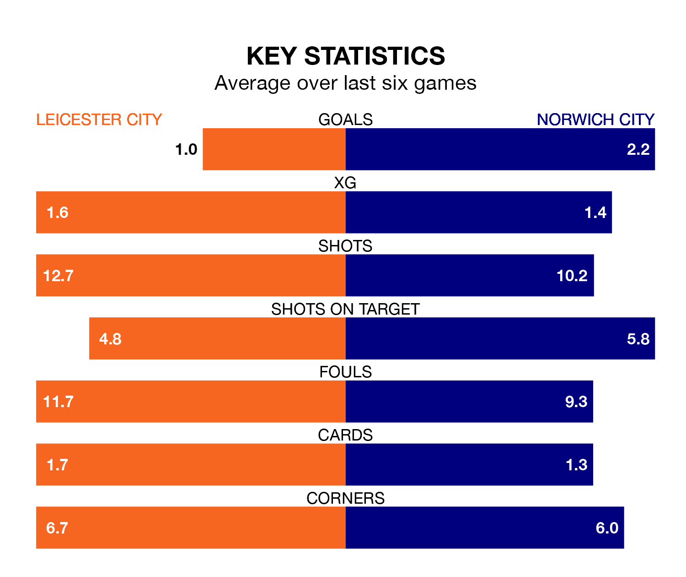

Leicester City host Norwich City in Monday lunchtime's match at the King Power Stadium looking to bounce back from defeat last time out in EFL Championship.
The Foxes, who sit third in the league after 38 games, fell to a 1-0 away defeat to Bristol City on Friday.
They face a Norwich side who picked up a win in their last match, a 2-1 victory against Plymouth Argyle, and who sit sixth in the table.
With 74 goals in 38 games so far this season, Leicester are the league's joint-second-highest scorers with 1.9 goals per game. And they are conceding fewer than average, letting in 34 goals at a rate of 0.9 per game.
Norwich are also above average scorers, with 1.8 goals per game, compared to a league average of 1.4. They have conceded 1.4 goals per game.
In the last 10 years, Leicester and Norwich have played each other on seven occasions. Leicester won five of them, Norwich one, and they drew once.
On average, the Foxes scored 1.6 goals and the Canaries 0.6 in those matches.
Their last meeting was on September 20, when Leicester won 2-0 away.
Leicester City are in bad form in EFL Championship, with one win and a draw from their last six games.
With four wins and a draw over that period, Norwich City's form is much better – they have taken 13 points from 18, compared to the Foxes' four.
With Mads Hermansen between the sticks, the hosts can rely on one of the league's safest pair of hands. He has kept 12 clean sheets in his 37 appearances this season in EFL Championship.
In the Canaries' net, Angus Gunn has nine clean sheets in 33 games. He has conceded a goal every 83 minutes, 40% more often than the 119 minutes between goals for Hermansen.
Monday's match will be refereed by Darren Bond, who has taken charge of 10 EFL Championship games so far this season, issuing one red card and booking 42 players. He has awarded four penalties.
The last Leicester game Bond refereed was a 3-0 home win against Rotherham United on December 23. His last Norwich match was their 4-1 win at home against Cardiff City on February 17.
Updated: 10:31 (UTC), 31/03/24